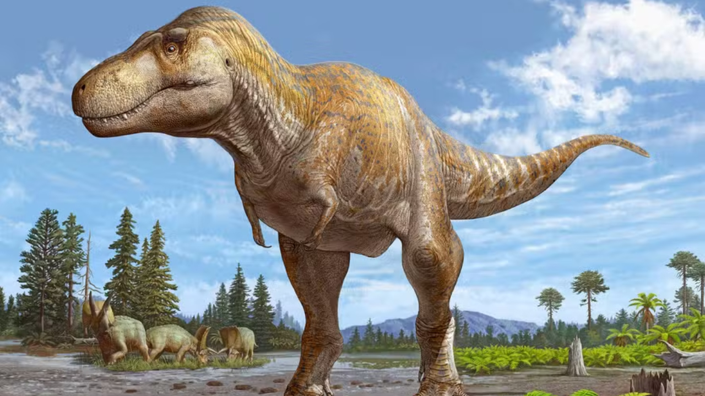
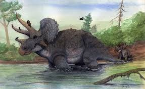
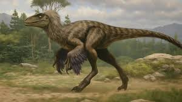
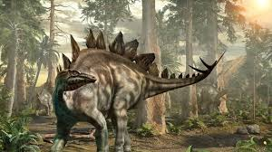
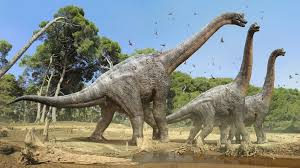
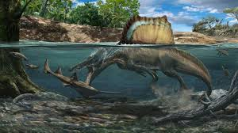

Nossos Dinossauros
Explore as feras do passado. Redimensione a tela (F12) para ver o layout se adaptando!
Tiranossauro Rex

O predador mais temido.
Tricerátops

Com seus três chifres icônicos.
Velociraptor

Pequeno, rápido e inteligente.
Estegossauro

Famoso por suas placas ósseas nas costas.
Braquiossauro

Um gigante herbívoro de pescoço longo.
Espinossauro

Um caçador formidável nos rios e lagos.